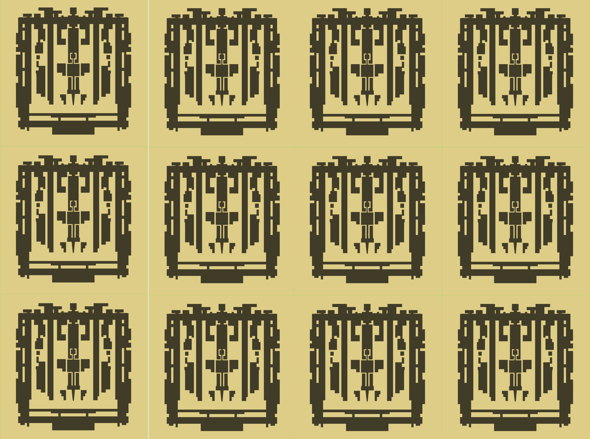

Arduino in Mindstorms form factor.
Mondo Brickbridge for LEGO Mindstorms
Brickbridge
The Brickbridge lets you hook up (almost) anything to your NXT or EV3 robot. It uses the Arduino platform as a bridge between interesting new inputs and outputs and your Mindstorms brick. The mounting holes are spaced to the Lego Technics 8mm grid which makes the board easy to snap on your construction.
Here it is on an actual tween-made robot:
BBOnRobot
When would you use it? Here’s an example: the Sophia Academy’s $0PH14 CY30RG5 FIRST team had to make a project related to natural disasters. After watching an episode of Mythbusters they came up with a device that would tell you what to do if your car was underwater in a flash flood. We used a Modern Device differential air pressure sensor hooked up to a Brickbridge; when the pressure inside and outside the car was different (represented by balloons) the Brickbridge sent a message to the Mindstorms brick which played a prerecorded message. Problem solved!
sophia
$0PH14 CY30RG5’s differential air pressure sensor for detecting whether your car is underwater.
How Does It Work?
Your Intelligent Brick can talk to the Brickbridge using a simple open source NXT-G or EV3 programming block. There’s one for reading from and one for writing to the Brickbridge. The board ships pre-flashed with Firmata-like slave software that implements a simple protocol for accessing all of the input and output pins of the board. You can use that right out of the box, or you can flash your own code on the Brickbridge using the Arduino IDE and an FTDI cable or In System Programmer.
A simple program interfacing with the Brickbridge looks something like this:
screenshot
With NXT
Screen Shot 2016-03-01 at 2.57.19 PM
With EV3
The Brickbridge uses the same Atmega chip as on the Arduino, so you have access to 6 analog inputs and 14 digital inputs or outputs. There’s also every peripheral available on the Arduino; interrupts, timers, SPI, and more. Because it is Arduino-compatible you can use any Arduino libraries or example code, for example Adafruit’s NeoPixel library.
The Mondo Connect shield sits on top of the Mondo Brickbridge and has rails for power, ground, and each signal. It also has a jack and regulator so you can power the Brickbridge without a Mindstorms Intelligent Brick.
connect
The Mondo Connect shield sits on top of the Mondo Brickbridge and has rails for power, ground, and each signal. It also has a jack and regulator so you can power the Brickbridge without a Mindstorms Intelligent Brick.
slide31